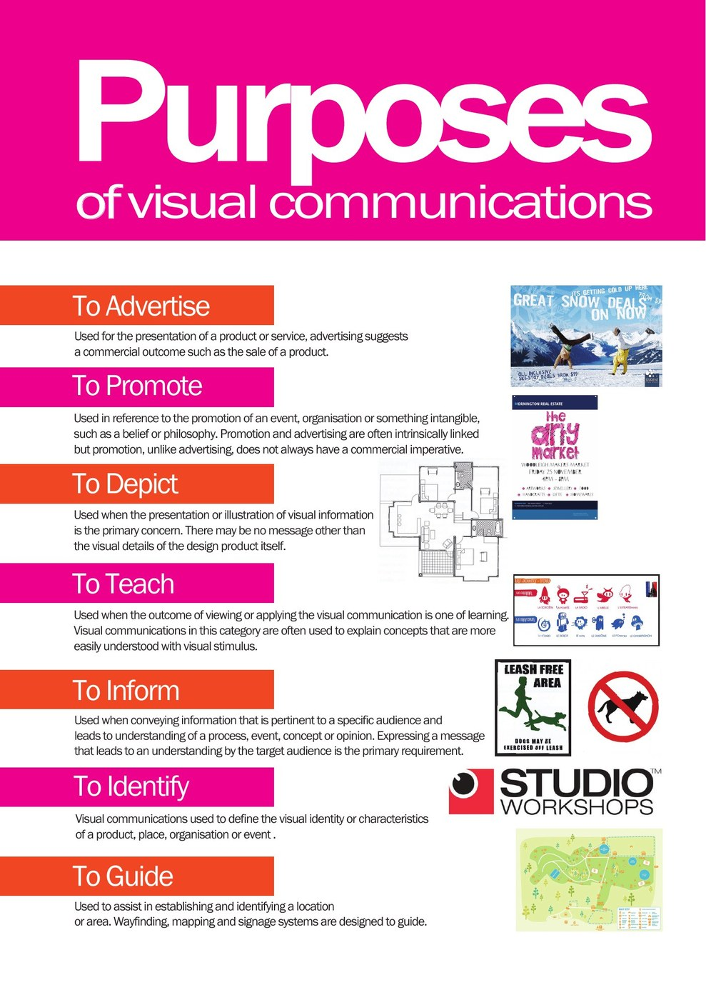

Paragraph 1 – Introduction to the Visual Communication Design
Write a paragraph to introduce the visual communication (VC) you are analysing.
The designer would have begun by establishing the communication need with the client prior to starting the packaging design when establishing the brief.
- Who is the client and what did they require? (Communication need)
- Describe the visual appearance of the packaging design including the layout (where things are placed on the packaging design).
The client is ____________ and they required ____________ (communication need).
The visual appearance of the packaging design is ____________ because ____________.
The layout places ____________ at the ____________, and ____________ near the ____________.
Paragraph 2 – Context & Main Purpose
Write a paragraph to discuss the context and the main purpose/s for this packaging design.
- What is the context (carrier & location) of the packaging design?
What is the carrier? (The carrier is the packaging – what the design is printed on.)
What is the location of the VC? - What is the purpose of the packaging design? Discuss three purposes. Support your responses with specific reference to the packaging design. Bold key VCD terminology such as the purposes and your choice of terms from this list: promote, identify, advertise, depict, inform, teach, guide.
The carrier is ____________ and its location is ____________.
The first purpose is to ____________ because ____________.
The second purpose is to ____________ because ____________.
The third purpose is to ____________ because ____________.
Purposes of visual communications

Paragraph 3 – Characteristics of the Target Audience
- Discuss the characteristics of the target audience of the packaging design. Include the terms age, gender, interest, socio-economic status, location and cultural background to describe the audience. You must describe ALL 6 characteristics listed above of the target audience to achieve a high mark for this paragraph.
- How does the packaging design engage this particular audience?
Their age is ____________.
Their gender is ____________.
Their interests are ____________.
Their socio-economic status is ____________ because ____________.
Their location is ____________.
Their cultural background is ____________.
The packaging design engages this audience through ____________ and ____________ because ____________.
Audience characteristics

Paragraph 4 – Dominant Design Elements
List the three most dominant design elements used in the packaging design. Write a short paragraph on each design element to analyse how they have been used effectively to engage the target audience, and why?
The design elements are: point, line, shape, form, tone, texture, colour and type.
It is effective because ____________, and it engages the target audience by ____________.
It is effective because ____________, and it engages the target audience by ____________.
It is effective because ____________, and it engages the target audience by ____________.
Paragraph 5 – Dominant Design Principles
List the three most dominant design principles used in the packaging design. Write a short paragraph on each design principle to analyse how they have been used effectively to engage the target audience, and why?
The design principles are: figure and ground, balance (symmetrical or asymmetrical), contrast, cropping, hierarchy, scale, proportion and pattern (repetition or alternation).
It is effective because ____________, and it engages the target audience by ____________.
It is effective because ____________, and it engages the target audience by ____________.
It is effective because ____________, and it engages the target audience by ____________.
Paragraph 6 – Methods, Media and Materials
List the methods, media and materials used in the production and printing of the packaging.
Write a short paragraph on the methods, media and materials to analyse how they have been used effectively to engage the target audience and hold the mug safely inside.
Various methods, materials and media will have been used in the design of the ‘VC’ and also in the production of the ‘VC’. In the grids below you will find words to choose from to help you with your analysis. Select the words carefully and use them together with your own words.
Method
| Drawing: manual freehand, digital freehand | Painting | Printmaking: lino, intaglio, silk screen | Printing: inkjet, laser, offset |
| Photography: manual, digital | Digital image manipulation: digital design, page layout | Collage | 3D process: construction, modelling |
Media
| Manual media | Digital media | Prototyping |
|---|---|---|
| Pencil, ink, fineliner, marker, pastel, crayon, charcoal, acrylic paint, watercolour paint, gouache paint, dye, toner, analogue film | Vector-based programs (e.g. Adobe Illustrator – lines and shapes), raster-based programs (e.g. Adobe Photoshop – pixels), page layout & composition programs, computer-aided design CAD programs | Manual Digital |
Material
| Manual materials | Digital materials |
|---|---|
| Paper, card, wood, glass, metal, clay, stone, plastic, textile | Screen |
Media: The media used was ____________, for example ____________.
Material: The material used was ____________.
This is effective for engaging the target audience because ____________, and it holds the mug safely inside because ____________.